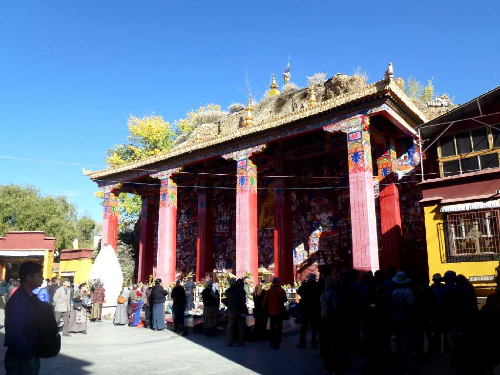
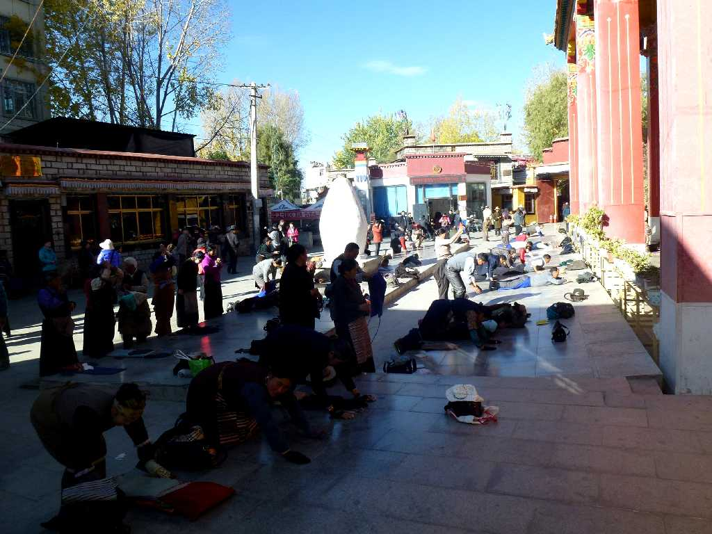
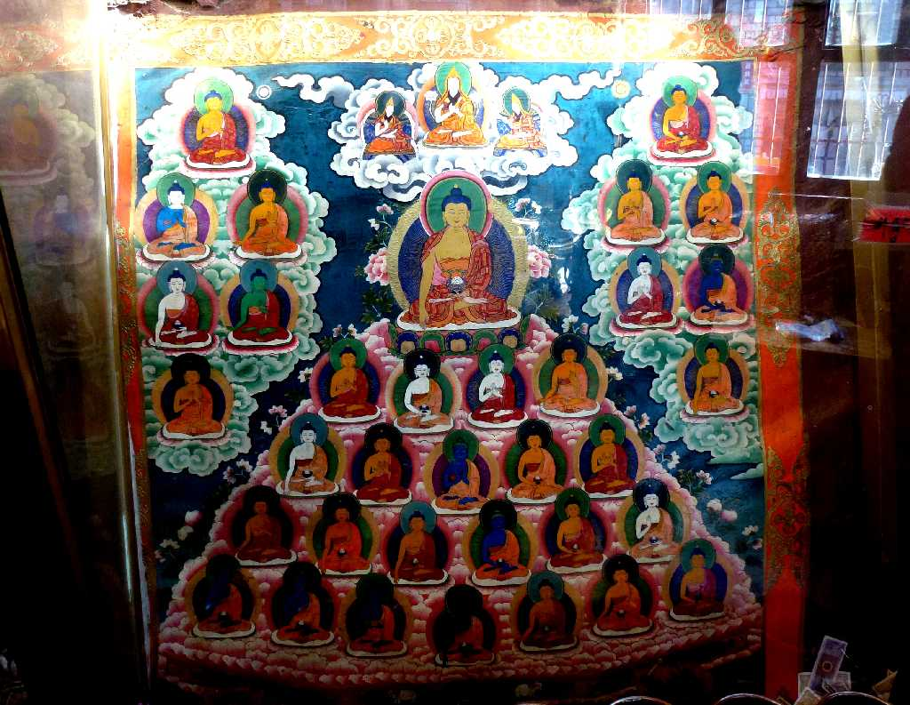
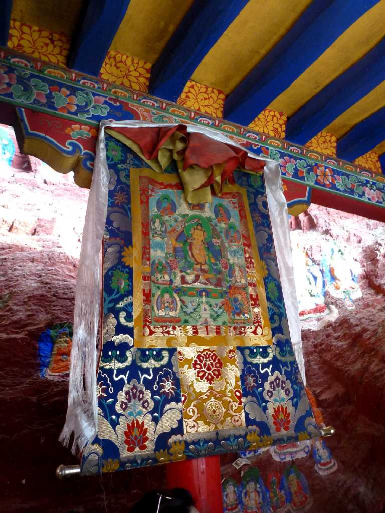
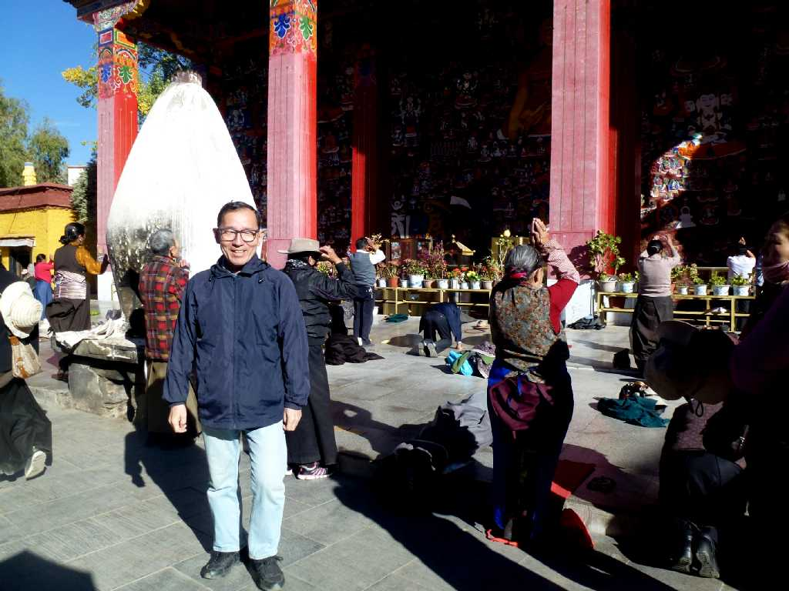

Yaowangshan Lhasa Tibet 西藏 拉萨 药王山
かつてはチベッと云われる薬王廟がありチベットの医者が集まっていたところで時代の変遷によりジョカン寺西のチベット病院になっていった

Yaowangshan Lhasa
薬王山は宗教と信仰と大自然が結合したところで最も伝統ある巡礼地となっているため五体投地をする信者が多い

Mandala Yaowangshan Lhasa 拉萨 药王山 曼陀罗

Thangka Yaowangshan Lhasa 拉萨 药王山 唐卡

October 21 2014 Yaowangshan